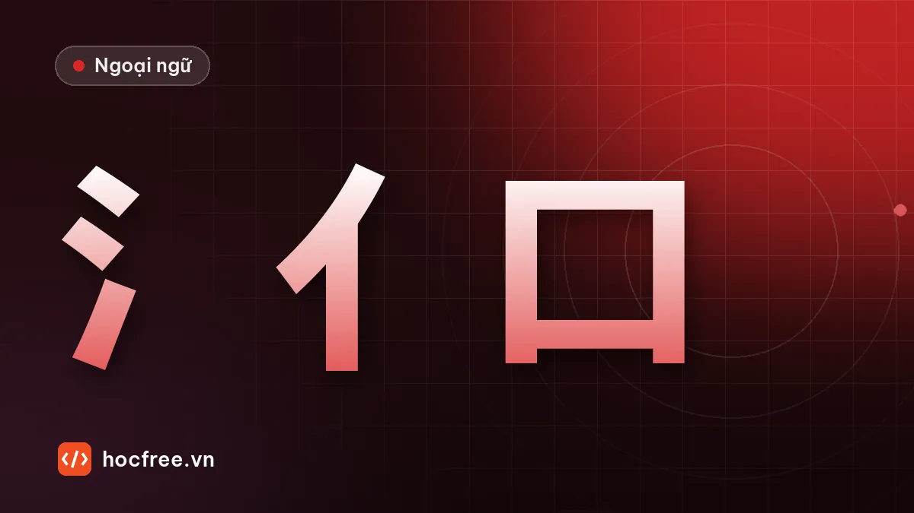

30 bộ thủ thông dụng và mẹo nhớ chữ Hán bằng âm Hán Việt
Bộ thủ là gì, 30 bộ hay gặp ở HSK 1–3 kèm ví dụ, chữ hình thanh và cách dùng âm Hán Việt để đoán nghĩa, nhớ chữ nhanh hơn.

Học xong bài này, bạn sẽ
- Nhận ra 30 bộ thủ thông dụng
- Hiểu cấu tạo chữ hình thanh
- Dùng âm Hán Việt để nhớ nghĩa từ
Nên học trước: Nét cơ bản và quy tắc thứ tự nét
Nội dung bài viết
Nếu coi mỗi chữ Hán là một bức tranh riêng thì nhớ 1.000 từ là cực hình. Thực tế phần lớn chữ Hán được ghép từ các bộ phận lặp đi lặp lại, gọi là bộ thủ. Biết bộ thủ, bạn đoán được nhóm nghĩa của chữ mới, tra từ điển nhanh hơn và nhớ chữ theo "câu chuyện" thay vì học vẹt. Người Việt còn có thêm một lợi thế lớn: âm Hán Việt.
Chữ hình thanh: một nửa chỉ nghĩa, một nửa chỉ âm
Đa số chữ Hán là chữ hình thanh: một bộ phận gợi nghĩa (thường là bộ thủ), một bộ phận gợi âm đọc.
| Chữ | Pinyin | Nghĩa | Phần nghĩa | Phần âm |
|---|---|---|---|---|
| 妈 | mā | mẹ | 女 (phụ nữ) | 马 mǎ |
| 吗 | ma | trợ từ hỏi | 口 (miệng, lời nói) | 马 mǎ |
| 请 | qǐng | mời | 讠 (lời nói) | 青 qīng |
| 晴 | qíng | trời nắng | 日 (mặt trời) | 青 qīng |
| 清 | qīng | trong, rõ | 氵 (nước) | 青 qīng |
| 饭 | fàn | cơm | 饣 (ăn) | 反 fǎn |
Phần âm chỉ gợi ý, không chính xác tuyệt đối về thanh điệu, nhưng đủ để bạn đoán và nhớ.
30 bộ thủ hay gặp ở HSK 1–3
| Bộ | Tên Hán Việt | Nghĩa gợi ý | Ví dụ |
|---|---|---|---|
| 亻 | nhân đứng | người | 你, 他, 们, 住, 休 |
| 口 | khẩu | miệng, nói, ăn | 吃, 喝, 叫, 吗, 呢 |
| 女 | nữ | phụ nữ | 好, 妈, 姐, 她 |
| 氵 | thủy (ba chấm thủy) | nước | 汉, 河, 海, 洗, 没 |
| 扌 | thủ | tay, hành động | 打, 找, 把, 拉 |
| 木 | mộc | cây, gỗ | 本, 林, 椅, 机 |
| 日 | nhật | mặt trời, thời gian | 明, 时, 早, 晚, 晴 |
| 月 | nguyệt / nhục | trăng; thịt, cơ thể | 朋, 服, 脑, 胖, 脚 |
| 心 / 忄 | tâm | tình cảm, suy nghĩ | 想, 忘, 忙, 快, 慢 |
| 讠 | ngôn | lời nói | 说, 话, 语, 请, 谁, 认 |
| 纟 | mịch | sợi tơ | 红, 绿, 给, 经 |
| 钅 | kim | kim loại, tiền | 钱, 银, 错, 钟 |
| 饣 | thực | ăn | 饭, 饿, 馆, 饱 |
| 辶 | xước | đi, di chuyển | 这, 还, 进, 远, 近, 道 |
| 宀 | miên | mái nhà | 家, 字, 安, 室 |
| 艹 | thảo | cỏ, cây | 茶, 菜, 花, 草 |
| 土 | thổ | đất | 地, 场, 坐, 在 |
| 门 | môn | cửa | 问, 间, 闹 |
| 𧾷 | túc | chân, đi lại | 跑, 跳, 路, 跟 |
| 目 | mục | mắt | 看, 眼, 睛, 睡 |
| 衤 | y | quần áo | 衬, 裤, 袜 |
| 车 | xa | xe | 辆, 轻, 输 |
| 贝 | bối | tiền, của cải | 贵, 货, 贴 |
| 雨 | vũ | mưa, thời tiết | 雪, 雷, 零 |
| 王 | vương / ngọc | ngọc, quý | 玩, 现, 球, 理 |
| 疒 | nạch | bệnh | 病, 疼, 瘦 |
| 火 / 灬 | hỏa | lửa, nóng | 灯, 热, 点, 照 |
| 冫 | băng | băng, lạnh | 冷, 冰, 凉 |
| 刂 | đao | dao, cắt | 到, 别, 刚, 刻 |
| 攵 | phộc | đánh, hành động | 教, 数, 放, 故 |
Âm Hán Việt: lợi thế riêng của người Việt
Một phần rất lớn từ vựng tiếng Việt có gốc Hán, nên rất nhiều từ HSK đọc theo âm Hán Việt ra ngay một từ tiếng Việt quen thuộc:
| Từ | Pinyin | Âm Hán Việt | Nghĩa |
|---|---|---|---|
| 学生 | xuésheng | học sinh | học sinh |
| 电话 | diànhuà | điện thoại | điện thoại |
| 问题 | wèntí | vấn đề | câu hỏi, vấn đề |
| 时间 | shíjiān | thời gian | thời gian |
| 准备 | zhǔnbèi | chuẩn bị | chuẩn bị |
| 注意 | zhùyì | chú ý | chú ý |
| 安全 | ānquán | an toàn | an toàn |
| 工作 | gōngzuò | công tác | công việc (khác nghĩa "đi công tác") |
| 经理 | jīnglǐ | kinh lý | giám đốc, quản lý |
| 东西 | dōngxi | đông tây | đồ vật (không phải hướng) |
Ba dòng cuối cho thấy cái bẫy: âm Hán Việt giống nhưng nghĩa có thể lệch. Luôn kiểm tra nghĩa trong từ điển, đừng chỉ đoán.
Cách tra âm Hán Việt: dùng từ điển Hán Việt trực tuyến (tra từng chữ), hoặc ghi chú thêm âm Hán Việt vào thẻ Anki. Đừng cố đọc tiếng Trung theo âm Hán Việt: đó là hai hệ thống phát âm khác nhau, chỉ dùng âm Hán Việt để nhớ nghĩa.
Luyện tập
Bài 1. Tìm bộ thủ và đoán nhóm nghĩa: 河, 说, 吃, 打, 跑, 看, 饿, 病, 钱, 花, 家, 冷, 她, 想, 雪.
Bài 2. Đọc âm Hán Việt và đoán nghĩa: 大学, 电脑 (não), 介绍 (giới thiệu), 意思 (ý tư), 医生 (y sinh).
Xem đáp án
Bài 1. 河 氵 nước (sông); 说 讠 lời nói (nói); 吃 口 miệng (ăn); 打 扌 tay (đánh); 跑 𧾷 chân (chạy); 看 目 mắt (nhìn); 饿 饣 ăn (đói); 病 疒 bệnh; 钱 钅 tiền; 花 艹 cây cỏ (hoa); 家 宀 nhà; 冷 冫 lạnh; 她 女 (cô ấy); 想 心 suy nghĩ (nghĩ, muốn); 雪 雨 thời tiết (tuyết).
Bài 2. đại học; điện não = máy tính; giới thiệu; ý tư = ý nghĩa; y sinh = bác sĩ.
Kiểm tra cuối bài
1. Chữ hình thanh gồm những phần nào?
2. Bộ 讠 và bộ 饣 gợi nghĩa gì?
3. 东西 có nghĩa là "đông tây" không?
Xem đáp án
- Một phần chỉ nghĩa (thường là bộ thủ) và một phần chỉ âm.
- 讠: lời nói; 饣: ăn uống.
- Không. 东西 dōngxi (thanh nhẹ) nghĩa là đồ vật; chỉ khi đọc dōngxī mới là hướng đông và tây.
Tổng kết và ôn tập
- Bộ thủ gợi nghĩa, phần còn lại thường gợi âm.
- Âm Hán Việt giúp nhớ nghĩa nhanh, nhưng phải kiểm tra vì có từ lệch nghĩa.
Bài ôn: mỗi khi học từ mới từ nay về sau, ghi thêm bộ thủ và âm Hán Việt vào thẻ. Bài tiếp theo: gõ tiếng Trung, từ điển và Anki.
Bài tập thực hành
- Tìm bộ thủ của 15 chữ trong phần luyện tập, đoán nhóm nghĩa rồi tra để kiểm tra.
- Tạo 10 thẻ Anki chữ Hán có ghi bộ thủ và âm Hán Việt.
Làm xong bài tập mới chuyển sang bài tiếp theo: đọc to, tự viết chữ Hán và tự chấm đáp án là cách duy nhất để nhớ lâu.